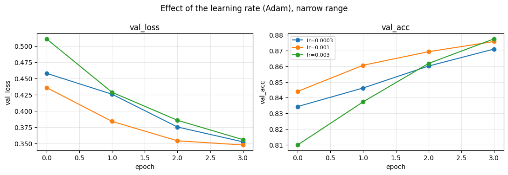
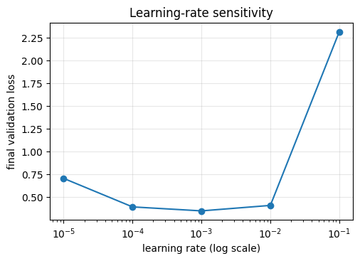

How Learning Rate Affects the Training of a Neural Network#
Introduction: Why Does Learning Rate Matter?
Have you ever wondered why a neural network sometimes learns quickly but struggles when you change just one setting? One important reason is the learning rate. For this experiment,
I wanted to find out: How does changing the learning rate affect the training performance of a small Convolutional Neural Network (CNN)?
I used PyTorch Lightning and the Fashion-MNIST dataset to compare different learning rates. My goal was to understand which values help the model learn effectively and what happens when the learning rate is too small or too large.
Understanding Learning Rate
The learning rate is a hyperparameter that controls how much a neural network adjusts its weights during training.
In simple terms, it determines how big each learning step will be. If the learning rate is too small, the model learns slowly. If it is too large, the model might skip over a good solution and struggle to improve.
The basic weight update formula is:
[ \theta \leftarrow \theta - \eta \nabla_\theta \mathcal{L}(\theta) ]
Where:
· (\theta) represents the model’s weights. · (\eta) is the learning rate. · (\nabla_\theta \mathcal{L}(\theta)) represents the gradient of the loss.
The learning rate is important because it affects how quickly and smoothly a model learns. Finding a suitable value can make a big difference in training performance.
Experiment Setup
For this experiment, I used the Fashion-MNIST dataset, which contains grayscale images of clothing items divided into 10 categories. Each image has a size of 28 × 28 pixels.
I used a small CNN with two convolutional blocks, batch normalization, ReLU activation, dropout, and fully connected layers.
To keep the experiments short, I used 10,000 training images and 6,000 validation images.
Here are the settings I kept the same throughout both experiments:
Configuration Value Dataset Fashion-MNIST Model Small CNN Optimizer Adam Learning rates 0.00001, 0.0001, 0.001, 0.1 Batch size 64 Training images 10,000 Validation images 6,000 Epochs 4 Random seed 42 Dropout 0.25 Scheduler None
I only changed the learning rate while keeping the other settings fixed. I also used validation results to compare performance rather than selecting settings based on test accuracy.
Results and Observations
I conducted two experiments to compare different learning rates.
Experiment 1: Narrow-Range Learning Rates
For my first experiment, I tested three learning rates: 0.0003(3e-4), 0.001(1e-3), and 0.003(3e-3). I wanted to see how values close to the default learning rate would affect the model.
Here are the results:
Learning Rate Best Validation Accuracy Final Validation Loss 0.0003 87.10% 0.352318 0.001 87.58% 0.347502 0.003 87.75% 0.355785

The results show that 0.003(3e-3) achieved the highest validation accuracy at 87.75%, while 0.001(1e-3) had the lowest final validation loss at 0.347502. The differences were small, but they helped me understand how learning rates close to each other can produce slightly different results.
Experiment 2: Wide-Range Learning Rates
For my second experiment, I tested five learning rates: 0.00001(1e-5), 0.0001(1e-4), 0.001(1e-3), 0.01(1e-2), and 0.1(1e-1).
This time, I wanted to compare a wider range of values and observe what happens when the learning rate becomes too small or too large.
Here are the results:
Learning Rate Best Validation Accuracy Final Validation Loss 0.00001 77.47% 0.706460 0.0001 85.73% 0.349995 0.001 87.27% 0.349995 0.01 85.53% 0.410024 0.1 10.78% 2.315130

The results show that 0.001(1e-3) performed best in terms of validation accuracy among the five settings. On the other hand, 0.1(1e-1) performed very poorly, reaching only 10.78% validation accuracy.

This graph compares the final validation loss across the five learning rates. It shows that 0.001(1e-3) achieved the lowest final validation loss in the wide-range experiment.
Discussion
Based on both experiments, I noticed that choosing the right learning rate makes a difference in how well the model learns.
In the first experiment, the three learning rates produced relatively close results. The value 0.003 achieved the highest validation accuracy at 87.75%, while 0.001 had the lowest final validation loss.
In the second experiment, the differences were more noticeable. The learning rate of 0.00001 performed worse, reaching only 77.47% validation accuracy. This suggests that the learning rate was too small for the model to learn effectively within four epochs.
Meanwhile, the learning rate of 0.1 had the weakest result, with only 10.78% validation accuracy and a final validation loss of 2.315130. This suggests that the learning rate was too large and made training difficult.
Interestingly, 0.001 performed consistently well in both experiments. Although 0.003 achieved slightly higher validation accuracy in the first experiment, the difference was small.
Overall, the results matched what I expected from the theory: a learning rate that is too small can slow down learning, while one that is too large can prevent the model from learning properly.
However, there are some limitations to my experiment. I only used 10,000 training images and four epochs to keep the training time short. I also used one random seed, so the results may vary when the experiment is repeated. In fact, rerunning the notebook can produce small differences of around 0.3 percentage points in validation accuracy. Testing more learning rates and using multiple seeds could provide a more reliable comparison.
Key Takeaways and References
After completing these experiments, I learned three important things:
· Learning rate matters. It affects how quickly a neural network learns and how well it performs.
· Bigger is not always better. A very high learning rate can make training unsuccessful, while a very low one can slow down learning.
· Testing different values helps. Comparing learning rates while keeping other settings unchanged makes it easier to understand their effects.
This activity helped me understand that training a neural network is not just about building a model. Choosing suitable hyperparameters is also an important part of getting good results.
References
Class notebook: hyperparameters_lightning.ipynb, [Jhun Brian Andam], [Data Science]. Base code for the experiment, the helper functions and the sensitivity plot.
Xiao, H., Rasul, K., & Vollgraf, R. (2017). Fashion-MNIST: a Novel Image Dataset for Benchmarking Machine Learning Algorithms. https://arxiv.org/abs/1708.07747
3.Kingma, D. P., & Ba, J. (2014). Adam: A Method for Stochastic Optimization. https://arxiv.org/abs/1412.6980
PyTorch Lightning documentation. https://lightning.ai/docs/pytorch/stable/
PyTorch documentation: torch.optim.Adam. https://pytorch.org/docs/stable/generated/torch.optim.Adam.html
AI Tool Acknowledgment
I used Claude (Anthropic) to help debug my notebook, to explain how the class notebook works, and to check grammar and clarity of my writing. I also used ChatGPT [for ___ only, e.g. general questions about the assignment / grammar checking]. The experiment, figures, explanation, and interpretation are my own work.